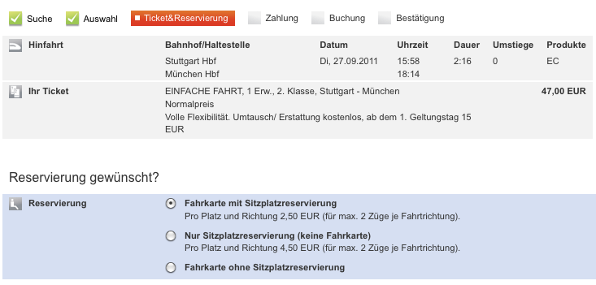

| Usability Pattern | Assistent |
|---|---|
| Alias | Wizard |
| Problem |
Benutzer möchten ein bestimmtes Ziel erreichen, müssen dazu jedoch eine Reihe von Entscheidungen treffen oder verschiedene Daten eingeben, die sie zunächst nicht überblicken. |
| Lösung |
Führe Benutzer mit Hilfe eines Assistenten schrittweise durch eine komplexe Aufgabe. Teile komplexe Eingaben oder mehrstufige Entscheidungen in überschaubare Teilaufgaben auf, die der Benutzer nacheinander erledigen kann. Biete einen Dialog-Assistenten an, der den Benutzer schrittweise durch die einzelnen Teilaufgaben führt. Der Assistent sollte dem Benutzer eine Übersicht über die einzelnen bereits erledigten und die noch ausstehenden Teilaufgaben anzeigen, damit der Fortschritt und der noch benötigte Aufwand bis zur Erreichung des Ziels abschätzbar sind. Der Assistent sollte dem Benutzer erlauben, zu vorigen Schritten zurückzukehren. Die noch ausstehenden Teilaufgaben können sich dynamisch aufgrund bisheriger Eingaben des Benutzers ändern, d.h. Teilaufgaben können wegfallen oder hinzukommen, wenn der Benutzer in einem vorherigen Schritt bestimmte Entscheidungen trifft. Weise Benutzer in diesem Fall darauf hin, weshalb diese Schritte wegfallen bzw. hinzukommen. |
| Beispiele |
Apple Mail: Konfiguration eines E-Mail-Kontos Die E-Mail-Anwendung Apple Mail führt Benutzer mit Hilfe eines Assistenten durch die notwendigen Schritte zur Konfiguration eines E-Mail-Kontos. In jedem Teildialog muss der Benutzer bestimmte Eingaben vornehmen, die jeweils inhaltlich zusammengehören (in den Screenshots: Persönliche Informationen, Angaben zum Mail-Server). Bei jedem Schritt werden die Eingabewerte überprüft. Benutzer können über einheitliche Buttons zwischen den einzelnen Schritten im Assistent navigieren oder den Ablauf abbrechen . Bahn.de: Buchung einer Zugfahrt Bei der Online-Buchung von Zugfahrten mit der Deutschen Bahn werden Benutzer von einem Assistenten durch die einzelnen Buchungsschritte geführt. Alle Schritte werden in einer Übersicht am oberen Rand des Dialogs angezeigt. Bereits erledigte Schritte werden grafisch „abgehakt“, der aktuelle Schritt hervorgehoben.  Übersicht über die Buchungsschritte bei Bahn.de |
| Nutzungskontext |
|
| Begründung |
Ein Assistent erlaubt Benutzern, komplexe Aufgaben schrittweise und im jeweils gewünschten Tempo zu erledigen und verbessert so die Steuerbarkeit des Systems. Einzelne Teilschritte der Aufgabe können vom System in Abhängigkeit bereits getätigter Eingaben an das Ziel des Benutzers angepasst werden, um unnötige Schritte zu vermeiden. Wenn der Assistent eine Übersicht über die einzelnen Teilschritte anzeigt, können Benutzer zudem leicht erkennen, an welcher Stelle im Ablauf sie sich momentan befinden und welche weiteren Schritte noch zu erledigen sind. Ein Assistent verhindert auch, dass Benutzer wichtige Eingaben vergessen. |
| Risiken, Nachteile, Kosten |
Erfahrene Benutzer werden durch Assistenten unter Umständen gebremst. Zudem geben Assistenten zumeist eine feste Abfolge der einzelnen Teilaufgaben vor und verhindern so, dass Benutzer die einzelnen Teilschritte in der von ihnen gewünschten Reihenfolge ausführen können. (Allerdings ist eine bestimmte Abfolge häufig durch inhaltliche Abhängigkeiten vorgegeben.) |
| Zusammenspiel |
Abhängigkeit Abbruch Benutzer sollten die Möglichkeit haben, einen durch einen Assistenten unterstützten Ablauf abzubrechen. Ergänzung Gute Standardwerte Das System sollte für komplexe, assistentengestützte Eingabedialoge gute Standardwerte vorgeben, um Benutzern ein effizientes Durchlaufen des Assistenten zu erlauben. Ergänzung Direkte Validierung Benutzereingaben in einzelnen Teilschritten eines Assistenten können direkt validiert werden. Benutzer können nur bei gültigen Eingabewerten mit dem nächsten Schritt fortfahren. Dies stellt vollständige und gültige Eingaben im Assistent sicher, geht allerdings auf Kosten der Steuerbarkeit, da Benutzer in diesem Fall nicht frei vorwärts und rückwärts innerhalb des Gesamtablaufs navigieren können. |
| Anforderungserhebung |
Identifiziere komplexe Abläufe
Überlege, wie die Übersicht über die Teilschritte dargestellt werden soll. |
| Anforderungsspezifikation |
Spezifiziere, für welche Interaktionen das Usability Pattern „ Assistent “ eingesetzt wird. Annotiere und ergänze dazu vorhandene Use Cases :
|
{kind=link}
{kind=link}
{kind=link}